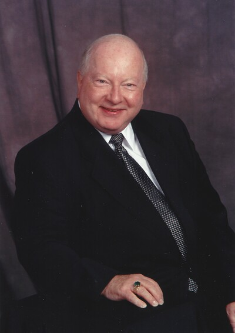
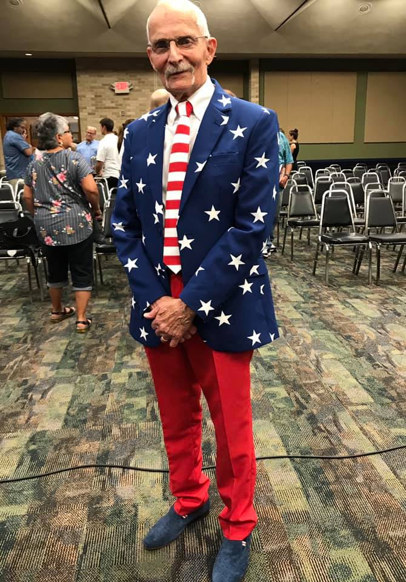

About¶
Province 9 is a regional division of the Phi Mu Alpha Sinfonia Fraternity, located in Central and South Texas.
Phi Mu Alpha Sinfonia¶
Phi Mu Alpha Sinfonia is the world’s oldest and largest secret national fraternal society in music. Sinfonia was born on October 6, 1898, at the New England Conservatory in Boston, when a group of thirteen young men under the guidance of Ossian Everett Mills met “to consider the social life of the young men students of that institution [and] to devise ways and means by which it might be improved.” Sinfonia became a national fraternity on October 6, 1900, with the admission of a group of men at the Broad Street Conservatory in Philadelphia. For over a century, Sinfonians in nearly every field of study and professional endeavor have transformed music in America. The opportunity of becoming a Sinfonian is offered to as many men as possible who, through a love for music, can assist in the fulfillment of the Fraternity’s Object and ideals either by adopting music as a profession or by working to advance the cause of music in America.
Our Mission¶
The Object of this Fraternity shall be for the development of the best and truest fraternal spirit; the mutual welfare and brotherhood of musical students; the advancement of music in America and a loyalty to the Alma Mater.
Province 9 Leadership¶
Leadership at the Province level is a mixture of appointed alumni and elective active brothers. The Province Governor and Deputy Province Governor are appointed by the National President. The Province Alumni Coordinator is then appointed by the Province Governor.
Because of the size of the Province, Province 9 has two dedicated Assistant Collegiate Province Representatives (ACPRs), one for the North and one for the South.
Province Governor - Shawn Lewis¶
Shawn Lewis is an accomplished conductor, arranger, and musician originally from San Antonio, Texas. A variety of impressive accomplishments and experiences mark his musical journey.
During his musical journey, Shawn Lewis had the privilege of performing with a plethora of prestigious musical groups. Notable Latin Music ensembles among the set include M, the award-winning "Mariachi Aguila" of Brackenridge High School in San Antonio, Texas, Texas State Mariachi Nueva Generación ,and a Latin Jazz group under the direction of percussion composer Alice Gomez. In addition, he played trumpet and piano in both Salsa ensembles, Orquestra Del Rio and Salsa Del Rio.
Shawn further honed his skills by studying Choral conducting with Dr. Jonathan Babcock and participated in Texas State's vocal ensembles, University Singers, and Men's Chorus.
In the realm of orchestral music, Shawn Lewis demonstrated exceptional proficiency, holding positions as a trumpeter in the Texas State Symphony Orchestra, the S.M.A.R.T Orchestra, the University of Incarnate Word Symphony, and the Phi Mu Alpha Sinfonia National Orchestra. He also played the French Horn and Trumpet in San Antonio College's Orchestra, Brass Choir, and the Wind Ensemble at Texas State.
As a commercial musician, Shawn contributed his talents to various local productions of Broadway classics, including "Beauty and The Beast," "Hairspray" "The Phantom of the Opera," "Fiddler on the Roof," and "Into The Woods."
Beyond performance, Shawn is a distinguished arranger, crafting musical compositions for high school bands, orchestras, and choirs in and beyond Central Texas.
His professional journey led him to Austin, where he worked at Meta for three years before eventually deciding to pursue a music education degree in Corpus Christi at Texas A&M.
Shawn's commitment to Phi Mu Alpha Sinfonia is evident in his extensive involvement, having pledged in the fall of 2010 with the Epsilon Iota class of the Gamma Phi Chapter. He assumed vital committee head roles within the organization, overseeing brotherhood, social activities, and alumni relations. His leadership extended to the executive board, where he held positions such as Alumni Relations Officer, President, and Music Director, winning talent shows and national competitions. He also contributed significantly to the Rho Epsilon Chapter, focusing on alumni relations and revitalizing these connections as Alumni Relations Officer.
Shawn has held several pivotal roles at the province level, including Music Director and Province Alumni Coordinator, in which he currently serves as the Music Director, Social Media Manager, and Province Governor. His dedication and leadership were further recognized when he was nominated for the 6 and 3-year term for committeeman at large at a national level and served as the assistant for the Men of Song Select chorus. Through his involvement with Phi Mu Alpha, Shawn Lewis has gained opportunities, found a true family, and formed bonds with an ocean of fraternity of brothers. He is committed to embodying the spirits of Support, Concord, Loyalty, Love, and Trust within the province, ensuring that the province remains a beacon of love and encouragement for every brother who seeks it.
All Hail
Deputy Province Governor - Mason Egger¶

Mason was initiated at Gamma Phi with 7 other brothers as part of the Epsilon Nu class in the Fall of 2012. During his time as an active he served on various committees and was the Alumni Relations Officer twice; once as an active in 2013-2014 and again as an alumni in 2016-2017. He graduated from Texas State University in the Fall of 2015 with dual degrees in Computer Science and Music.
Mason is currently Sr. Technical Curriculum Developer at Temporal.io who specializes building community, developer-focused educational content, distributed systems, and Python. Prior to his work at Temporal he launched Developer Relations at Gretel.ai as the Lead Developer Advocate, and was a Developer Advocate at DigitalOcean specializing in Infrastructure-as-a-Service technologies. His engineering experience includes time as an Site Reliability Engineer helping maintaining Expedia's cloud as well as a role working in Cyber Security for a Raytheon company. He's an avid programmer, speaker, educator, and writer/blogger. He is an organizer of the PyTexas Conference, Meetup, and is President of the PyTexas Foundation. He actively contributes to open source projects, mostly surrounding PyTexas and the Python programming language. In his spare time, he enjoys reading, camping, kayaking, and exploring new places.
To read more, check out his website mason.dev
Province Alumni Coordinator - Chirs Silva¶
Hello Brothers,
I am Chris Silva, your Province Alumni Coordinator. I was initiated in Fall 2006 at Kappa Chi at Del Mar College. At KX, I served as FEO before transferring to TAMUCC with Rho Epsilon and serving as FEO and as President. I also served one year as ACPR South. I didn’t graduate from TAMUCC as I moved to San Antonio, but I eventually completed my B.S. in Information Technology through an online institution. I landed a job at Rackspace and worked until I landed my current job with A Cloud Guru (A Pluralsight Company). I am part of the team that creates and updates training content for AWS, Azure, and Google Cloud, along with DevOps and Security. If you’re familiar with the company, you’ve heard my voice and learned how to do various things across these disciplines from my videos.
As a Collegiate Brother, I always enjoyed spending time with the Brothers and travelling around. I attended Leadership Institute twice (once in Nashville and once in Evansville) and National Convention 2009 in Orlando. Some of the best Brotherhood Development I’ve experienced has been in those 20+ hour car rides across the country! As your PAC, I hope to be a resource for the AROs in developing strong Alumnirelations. I was nervous but excited about the opportunity when Shawn asked me to be PAC. The Fraternity has had its fair share of setbacks over the last few years, and rebuilding trust and confidence in the organization within our Alumni base is of utmost importance as this body makes up the vast majority of the organization. I want to help the AROs develop strategies and create opportunities for strong Alumni engagement to rebuild trust and confidence in the organization and help rekindle Sinfonia’s fire within our Alumni Brothers. While my focus is on Alumni Relations, I am available as a resource to any Brothers in need. Please don’t hesitate to reach out if you need anything, have questions, or want to chat or get the opinion of some old guy.
Fraternally, Chris Silva, KX ‘06 PAC
Collegiate Province Representative - Victor Briseno¶
Hello Brothers!
My name is Victor Briseño and I am a master’s student at Texas State University and an award-winning mariachi/opera vocalist hailing from Kingsville, TX. While pursuing my bachelor’s degree, I heard about Phi Mu Alpha, a fraternity aligned with my values and aspirations, and felt a strong calling to join. In the Spring of 2021, I crossed and joined the ranks of the distinguished Gamma Phi Chapter with the class of Zeta Zeta. Soon after, I adeptly fulfilled the roles and responsibilities of the Fraternal Education Officer (FEO), Assistant Fraternal Education Officer (AFEO), Treasurer, Fundraising Committee Head, and Brotherhood Committee Head. I have also, over my course of time, served on every committee in my chapter and actively work on increasing intraprovincial relationships by making lifelong friends in other chapters.
Recently acclaimed as the elected Chapter Province Representative (CPR) for Province 9, I stand poised to become a recognizable and approachable figurehead, a pillar of support and guidance for my fellow brothers and chapters. In this role, I envision amplifying the interactivity within the province, facilitating meaningful exchanges, building chapter leaders, solving looming or worrisome issues, and collaboratively charting the course for the province's collective journey beyond the challenges posed by the pandemic. I am beyond excited to work for the Province Council, but truthfully I am more enlivened by the mere fact that I get to serve the brothers of the prestigious and powerful Province 9. Please do not hesitate to reach out to me if there is anything I can do to help you or your chapters. You can find all my socials down below.
On And Ever Upwards,
Victor M. Briseno - Collegiate Province Rep. of Province 9
Assistant Collegiate Province Representative (North) - Jamarian Williams¶
Assistant Collegiate Province Representative (South) - David Villarreal¶
History¶
Past Leadership¶
Past Governors¶
Matthew Trevino¶
Matthew Trevino is in his 14th year teaching elementary music, and his 9th year teaching the amazing students at Roan Forest Elementary. Trevino was a semifinalist for the 2018 and 2022 Music Educator GRAMMY and is currently on the GRAMMY race as a quarterfinalist for the 5th time. Since establishing his percussion group Sonido in 2015 the group Sonido was invited to perform at the opening ceremonies of the 2017 AOSA Conference in Fort Worth, Sonido was an “invited ensemble” for the 2020 TMEA Convention where they tore the roof off of the house! They have since performed at the Tobin Center, performed for STOMP! Performed for the Spurs, the San Antonio HS All Star Game at the Alamodome, and for countless other performances.
#goroanforestgo
Robert Whalin: September 23, 1935 - May 9, 2023¶

Dr. John Robert Whalin of San Marcos, Texas passed away on May 9, 2023. He was born in Bloomington, Illinois on September 23, 1935. He was preceded in death by his parents, Oren Leslie Whalin and Pearle Dennison Whalin, and his sister Mary Lois Major. He is survived by his wife of 62 years, Mary Whalin; son and daughter-in-law Brent and Dianna Whalin; daughter, Kimberly Whalin Lock; and his grandsons Gene, Ryan, Sean, and Jayce. Dr. Whalin,“Bob”, moved to San Marcos in 1964 to teach piano at Southwest Texas State University. During his tenure, he travelled extensively as a classical concert pianist. He was an active leader and province governor with Phi Mu Alpha Sinfonia for over 20 years and received the Robert J. Rogers lifetime service award. He was also awarded the faculty senate award for excellence in teaching in 1990 and 1995. He retired in 2001 and went on to teach at Austin Community College for 10 years and teach private lessons into his 80s. Bob was an active San Marcos Rotary Club member for 30 years. He was also the choir director at the Presbyterian church in New Braunfels, TX. He loved Austin Symphony concerts with his wife, hosting gatherings at their home in San Marcos, and attending his grandsons’ sports and music performances. He was a dedicated father and proud grandfather who would build an entire Christmas village in the den every year. He was loved and will be missed by so many.
David Irving: October 21, 1940 - April 3, 2024¶

A native of Corpus Christi, earned his bachelor's and master's degrees at North Texas State University (now the University of North Texas). A guitarist from the age of four, he went through high school and college disguised as a French horn player. He began his teaching career with a three-year stint as the school band director for the Central-Texas community of Mart. It was there that he started his first school jazz band, learning along with his students and staying slightly ahead of them by reading each lesson of the group's class method book the night before he introduced it to the band. Apparently it worked; during the band's first year of existence it placed at the then-prestigious Brownwood Stage Band Festival. In his six years as band director in Ingleside, he regularly produced first-division concert, marching, and jazz bands. The jazz band he started there was the first public-school stage band in South Texas to rehearse on a daily basis. He came to Del Mar College in 1972. During his tenure at the school, the jazz bands have performed with many of the greatest names in jazz. In 1987, the MWF Jazz Band toured Europe, appearing at Holland's North Sea Festival and Switzerland's Montreux Festival. In addition to his duties as jazz band director, Irving teaches jazz appreciation, the history of rock music, and beginning guitar. He has recently completed work on his guitar class method, titled Learn To Play the Guitar in Three Easy Lessons (and Twenty Hard Ones). Irving is a member of Phi Mu Alpha Sinfonia, the national fraternity for men in music, and is an honorary member of Phi Sigma local professional music sorority.
The Fraternity has had some form of presence at the nation’s largest music educators convention since the 1980s. That presence has grown over the past few years thanks to Brother David Irving, Gamma Theta (North Texas University) 1960. The Phi Mu Alpha Booth at TMEA now sees over 800 Brothers annually and has become an official part of the Official Exhibit Booth program of the National Headquarters.
It was Brother Irving who began forging a consistent place for the Fraternity at the convention starting with small booth spaces that he paid for by himself. He would help offset the costs of the booth by selling Fraternity history books that were provided by the National Headquarters. As his efforts grew, so did the booth’s attraction to alumni and friends of Fraternity.
At the 1985 National Assembly, Brother Edward Klint, Alpha Xi (The University of Illinois at Urbana-Champaign) 1978, coordinated a Step Sing. The next year, in 1986, Brother Irving recreated that experience at the TMEA Convention by gathering a small group of Brothers at San Antonio’s Grand Hyatt Riverwalk Mezzanine to sing and share in the comradery of the event.
Originally known as the “Texas Sing,” it became what is now Phi Mu Alpha’s Annual TMEA Step Sing, and the thirty-some Brothers at that first sing has grown into hundreds. By 1992, the Step Sing had well outgrown its original location and moved to its current venue inside the Convention Center to better accommodate the number of Brothers and audience members in attendance. Today the TMEA Step Sing is perhaps one of the largest regular gatherings of Sinfonian Brothers in the nation, and attendance continues to steadily increase.
It is nothing more than a testament to the strength of Phi Mu Alpha’s bonds of Brotherhood that a man can gather together with others for nothing more than to share in a song with another or to rekindle his fire for the Fraternity. It is because of humble beginnings and the dedication of a few that the small booth at TMEA has become an event that is looked forward to yearly by many.